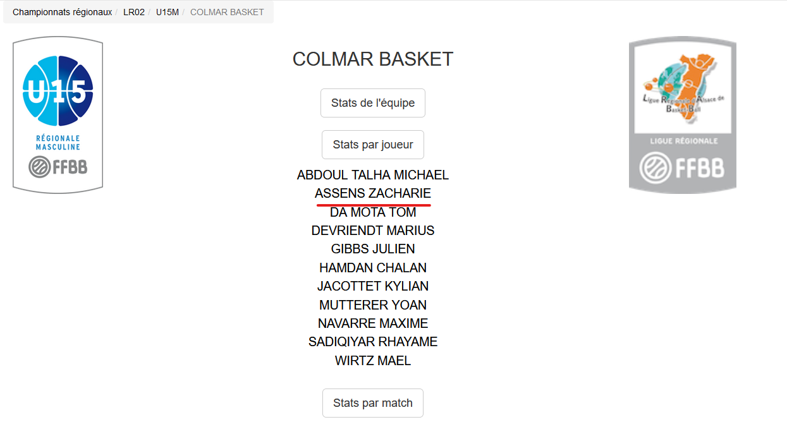

Je dispose que quelques traces sur Internet. Sans prendre en compte mes réseaux sociaux (Instagram notemment), la recherche de "assens zacharie" donne trois résultats pertinnent.

Le screenshot ci-dessus nous en montre deux. Le premier lien clickable n'est pas forcément intéressant. Il s'agit d'un compte facebook que j'ai créé il y a environ 10 ans. Cependant, il est donc facilement possible de savoir qui je suis en trouvant ma famille et mes amis sur facebook à travers ce compte.
Le troisième lien clickable sont des données de mon lycée, à Colmar. Il montre manifestement ma classe de seconde. On peut y trouver le nom et prénom de ma professeur de français, et de tout mes camarades. Ce lien dévoile également le lycée et la ville dans laquelle j'étais. En combinant ces deux premiers liens, il n'est pas difficile de me localiser ou ma famille.
Ce dernier lien clickable se trouve un peu plus bas dans les résultats après la recherche "zacharie assens". On y retrouve les données du site colmar basket. On voit mon équipe de U15, et mes statistiques. Il ne s'agit pas d'information critiques à mon égard, à part que j'étais nul au basket à 15 ans.